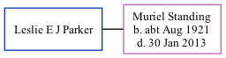

Leslie E J Parker
[ Home ] | [ Calendar ] | [ Surnames Index ] | [ Family History ]Leslie Parker, the husband of Muriel Alice Standing (the fourth cousin once-removed on the father's side of Nigel Horne), and married Muriel in Ilford, Essex, England around Nov 19451 (Oct/Nov/Dec).
Citations
- England & Wales, Marriage Index: 1916-2005 Online publication - Provo, UT, USA: The Generations Network, Inc., 2009.Original data - General Register Office. England and Wales Civil Registration Indexes. London, England: General Register Office. © Crown copyright. Published by permission of the Cont
Family Tree
Generated by ged2site. Last updated on Nov 13, 2024